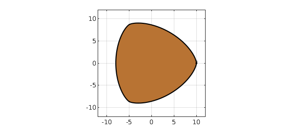

A Mathematics Today column by Alan Champneys [2] describes a fascinating example that can be found in Wikipedia [4] and goes back to a paper by Rabinowitz [3]; see also [1]. Here is a bivariate polynomial $p(x,y)$:
tic
r2 = @(x,y) x.^2 + y.^2; xy = @(x,y) x.^2 - 3*y.^2;
p = @(x,y) r2(x,y).^4 - 45*r2(x,y).^3 - 41283*r2(x,y).^2 + ...
7950960*r2(x,y) + 16*xy(x,y).^3 + 48*r2(x,y).*xy(x,y).^2 + ...
x.*xy(x,y).*(16*r2(x,y).^2 - 5544*r2(x,y) + 266382) - 373248000;
The result is that the zero set of $p$ has constant width in the complex plane! -- like the British 50p coin. Let's verify this in Chebfun. Here's the domain, computed with the Chebfun2 roots command:
pc = chebfun2(p,[-11 11 -11 11]); r = roots(pc); copper = [.722 .451 .20]; fill(real(r),imag(r),copper) axis(12*[-1 1 -1 1]), axis square, grid on

We compute its width measured in 5 different directions, and they agree to 5 digits, which is not bad considering the size of the coefficients.
disp('theta/pi width')
for theta = pi*(0:4)/5;
a = exp(1i*theta);
width = max(real(a*r)) - min(real(a*r));
fprintf('%8.5f %12.8f\n',theta/pi,width)
end
theta/pi width 0.00000 18.00727883 0.20000 18.00041631 0.40000 18.00052076 0.60000 18.00086199 0.80000 18.00028527
The exact result should be 18, as can be verified by setting $y=0$, in which case the polynomial reduces to
p = @(x) x^8 + 16*x^7 + 19*x^6 - 5544*x^5 - 41283*x^4 + 266382*x^3 + 7950960*x^2 - 373248000;
We confirm that this is zero at $x=-8$ and $x=10$:
p(-8) p(10)
ans =
0
ans =
0
Just for fun let's compute the perimeter of the coin, presumably also accurate to about 5 digits:
perimeter = norm(diff(r),1)
perimeter = 57.179193996908275
time_for_this_example = toc
time_for_this_example = 3.371892000000000
[1] M. Bardet and T. Bayen, On the degree of the polynomial defining a planar algebraic curves of constant width, arXiv:1312.4358v1, 2013.
[2] A. Champneys, Westward Ho! Musing on mathematics and mechanics, Mathematics Today, April 2022, 56--59.
[3] S. Rabinowitz, A polynomial curve of constant width, Missouri Journal of Mathematical Sciences 9 (1997), 23--27.
[4] Wikipedia, "Curve of constant width".